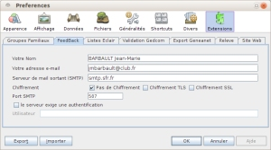
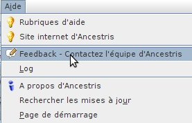
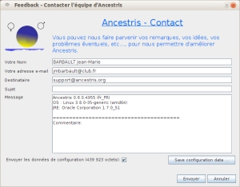

|  |
FeedBack sert à envoyer un mail, d'où les renseignements à fournir. Votre Nom (c'est mieux de connaître son interlocuteur). Votre adresse e-mail indispensable pour envoyer le mail et recevoir une réponse. Serveur de mail sortant (SMTP) [et les lignes suivantes] est indispensable pour envoyer le mail, il est lié à votre connection internet. Ce sont les mêmes informations que dans votre logiciel de courriel. Si vous ne les connaissez pas, un petit appel à Google(ou autre) avec smtp orange donne l'information. Avec "smtp orange" j'ai obtenu le tableau de tous les serveurs smtp et leurs paramètres. |
|  |
|  |
Les trois premières lignes sont prêtes. À la quatrième : Sujet, indiquer le contenu du message. À la cinquième : Message, il est possible de supprimer ce qui est préécrit, mais il vaut mieux laisser les trois lignes techniques concernant les versions d'Ancestris, votre système et Java. À partir de Commentaire : l'expression est libre, s'il manque de la place, il va s'en créer automatiquement. Après la fenêtre message il y a une case à cocher et un bouton. La gestion dépend du contenu du message, est-il technique ou pas. Si le message n'est pas technique, c'est fini, il n'est pas utile d'envoyer les données de configuration. Si le message concerne une difficulté technique concernant Ancestris, il faut cocher : Envoyer les données de configuration et les enregistrer en utilisant le bouton [Save configuration data]. Le lieu d'enregistrement n'a pas d'importance. [Save configuration data] crée un fichier ancestris012345.zip qui sera envoyé en pièce jointe avec le courriel. |
Normalement le courriel est parti et un message vous en informe.
Si au contraire vous avez un message d'échec, reprendre la procédure ici,
l'erreur vient probablement du réglage du smtp.
Comme le support d'Ancestris est très réactif, vous devriez recevoir rapidement une réponse.
|
|
|